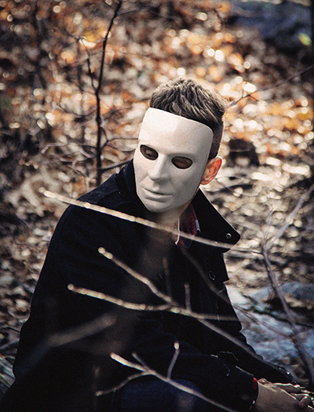
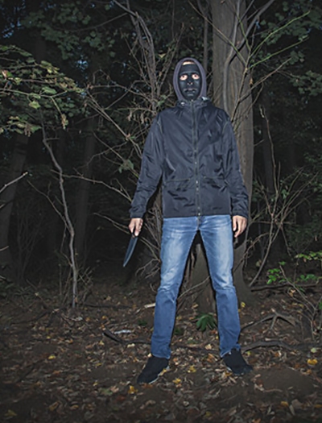

|   |
We are a hunting party called "The Prey". We were a group of enthusiastic hunters of exotic animals. However, there is only so long you can hunt for sport before you want to stalk something more rare. Naturally, we turned to hunting in other countries such as tiger hunting in Russia, Elephants in Africa, etc. but it loses its luster quickly as the sport of it wears thin. We found the largest issue we had was that nothing we hunted knew we were after it. Which means it never fought to survive; there was never any fight in it. We found a new way to hunt without expensive trips and equipment. You can hunt in your street clothes. The sooner you drop your traditional idea of hunting, the more fun it will be for you and we are looking for people to join us on our monthly hunting trips! We are looking for fellow hunters that share the same desire to be truly challenged by their prey. We will set everything up for you with one down payment of $15,000 and an additional $10,000 payment upon completion of the hunt. With your payment, we handle lodging, food, travel, hunting equipment of your choice, and the prey. You don't have to do anything but show up. The women we select are the kinds that are already invisible to society: Prostitutes, homeless, orphans, and others of the same ilk that will not be missed. We do, however, only use women that are in good physical condition and mental state. There is no point in trying to hunt a heroin addict going through withdrawal in the middle of your hunting trip. Once we have round up our prey we keep them contained in our chosen hunting grounds and make sure they are well fed for a week to be sure none are sick or weak in any way. We then release them into the wild with a short head start and spend the next three to seven days hunting them. It is the most challenging hunt you will ever be a part of. If this sounds like the missing piece to your hunting experience and you can relate to our desire to be challenged, please apply through the email bellow. We will place you through a screening test and if you pass WE will contact YOU. Places fill up fast every month but we have plenty of women to hunt. We try to have a minimum of five women each outing. If we are out of places, we will add you to the wait list. Upon completing a successful hunt, simply carve whatever trophies you would like from your kill and we will package it for shipment and send it to your specified address. We will even ship the entire body! $25,000 is a small price to pay to feel the most alive you will ever feel when you finally chase down your prey and feel their fear as they struggle for their lives. Join us? join@kv8wtvliaskrk8bha381139.ann Successful kills by hunters just like you! 


|